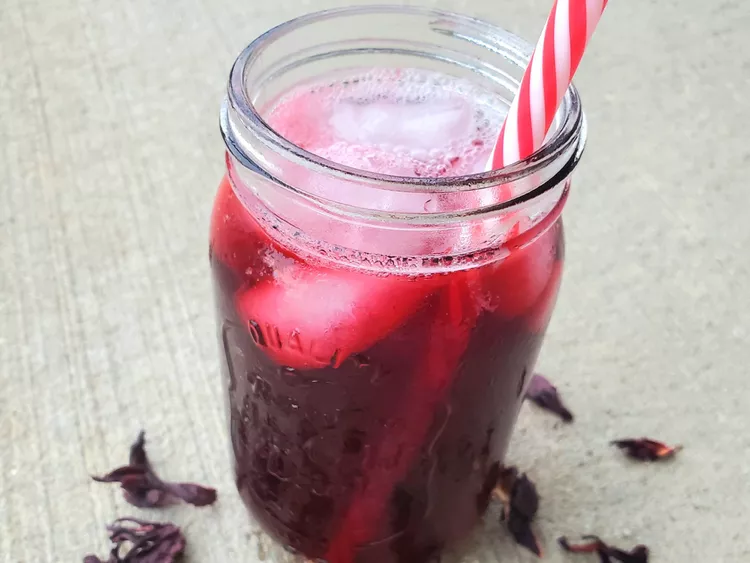

Agua de Jamaica

Description
This hibiscus drink is served throughout Mexico. It is nice and refreshing. It is similar to a tart cranberry tea drink. You may add more or less sugar to your taste if you prefer. Enjoy!
Ingredients
- 6 cups water
- 2 cups dried hibiscus petals
- 1 cinnamon stick
- 1 pinch ground cloves
- 1 pinch ground nutmeg
- 1 pinch ground allspice
- ½ cup chopped piloncillo (Mexican brown sugar cones)
- 1 ½ cups white sugar
Steps
- Place 6 cups of water in a large saucepan; bring to a boil. Stir in the hibiscus petals, cinnamon, cloves, nutmeg, and allspice. Reduce heat to medium-low, and gently simmer until the water has turned a deep red, 30 to 45 minutes.
- Stir the chopped piloncillo into the hibiscus water until dissolved, then set aside to cool 15 minutes. After cooling, strain the warm liquid into a 1 gallon pitcher through a wire mesh strainer. Squeeze as much liquid from the petals as you can, then discard the petals. Stir in the white sugar until dissolved, then pour in enough cold water to fill the pitcher. Serve immediately or let stand overnight for best taste.